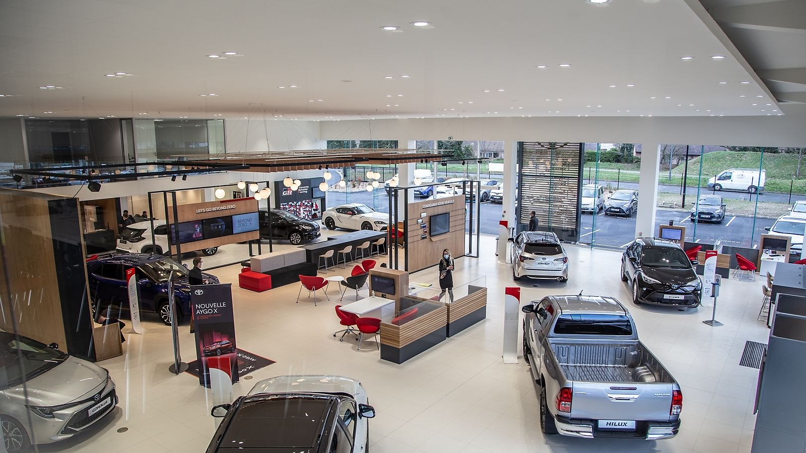

Kayıt Ol
Toyota Türkiye'ye Hoş Geldiniz

Toyota Türkiye'nin en popüler modellerini keşfedin. Aşağıdaki linklerden detaylı bilgilere ulaşabilirsiniz.
Popüler Toyota Modelleri
Neden Toyota?
Toyota, 80 yılı aşkın tecrübesiyle otomotiv sektörünün lider markalarından biridir. Toyota'yı seçmek için birçok neden var:
- Üstün kalite ve güvenilirlik
- Yenilikçi hibrit teknolojisi
- Düşük yakıt tüketimi ve çevre dostu yaklaşım
- Yüksek ikinci el değeri
- Yaygın servis ağı ve kaliteli müşteri hizmeti
Toyota'nın kalite ve güvenilirlik konusundaki kararlılığı, dünya çapında milyonlarca müşterinin tercihi olmasını sağlıyor. Siz de Toyota ailesine katılın, farkı hissedin!